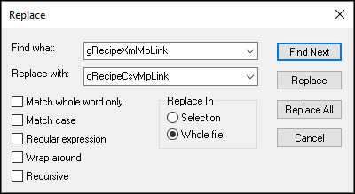

mapp Recipe Framework - Change Recipe Format
By default the Framework sets up the recipe system in the XML format. The framework includes recipe configurations for both the XML and CSV formats to simplify changeover. If you'd like to switch to CSV, follow the steps below:
- In RecipeMgt.var:
- Change the datatype of variable MpRecipe_Preview to MpRecipeCsv
- Change the datatype of variable MpRecipe_0 to MpRecipeCsv
- Change the datatype of variable Header to MpRecipeCsvHeaderType
- In RecipeMgt.st:
- Go to Edit → Find and Replace → Replace
- Replace all instances of gRecipeXmlMpLink with gRecipeCsvMpLink

NEED TO TEST THIS